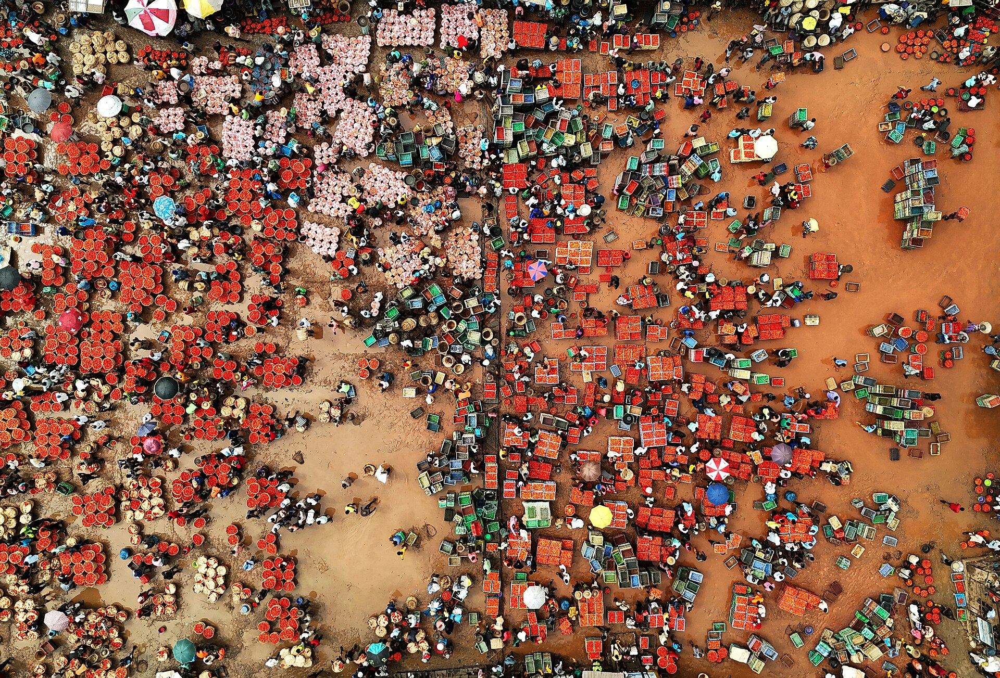
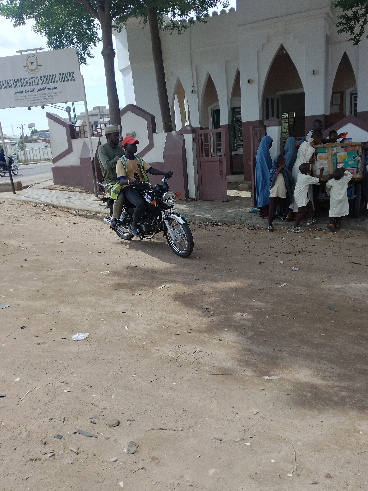

A carton across the road
could save a life.
Peer-to-peer medicine sharing between Nigerian primary health centres. Confirmed on the shelf before a rider moves.
A Nigerian primary health centre orders every two months, records stock on paper, and waits over a fortnight for delivery. By the time the gap is noticed, the patient has already been turned away.
Government guidance already recommends redistribution between neighbouring facilities. Nothing executes it at the public tier, where the phones are basic and the records are paper.
The stock exists. What is missing is a mechanism.
Essential medicines absent. A child waits, or is sent home with a prescription the family cannot fill.
Thirty-one units on the shelf. Records say forty. Come March they are written off as wastage.

Bin cards updated by hand, rarely per transaction. The shelf and the ledger drift apart every week.
A gap that opens on day three is not acted on until the next order cycle, and then takes two more weeks.
System records run 70–87% accurate. A clinic promises drugs its own database says are in stock, and they are already gone.
The failure is not ignorance. It is latency.
The nurse texts the drug name and quantity to a shortcode.
Names are fuzzy-matched against a standard drug list.
Nearby facilities holding that drug as surplus are located.
Each checks the physical shelf and replies yes or no.
A contracted rider moves the stock the same day.
Both stock records update from the confirmed transfer.

Four players serve private pharmacies, hospital networks, or donated stock. None runs a peer-to-peer exchange between public primary health centres on basic phones.
OpenLMIS is already in Nigeria. It is credited with saving 850,000 vaccine doses from expiry. We connect to it — we do not replace it.
The receiving clinic checks the shelf, not the database. The stale-record failure mode disappears.
No smartphone, no app, no data bundle. A feature phone and a shortcode are enough.
Designed for the 20,000 facilities that commercial logistics has no reason to serve.
Existing riders, existing nurses, existing records. No new buildings, no cold fleet.
Pharmacies subscribe for the same network. Their fees cover the riders.
Stock records and requisitions. Already deployed in Nigeria and proven at national scale.
Rider assignment, live tracking, and proof of delivery with a signed code.
USSD, SMS and WhatsApp gateway. Reverse-billed shortcode, so the nurse pays nothing.
Fuzzy drug-name matching against a standard vocabulary. Handles misspelling and brand names.
the matching, routing and confirmation logic that connects all four.
We charge for moving it and for seeing it. That single rule keeps public stock out of commerce and keeps the model defensible to a regulator.
Pilot is grant-funded for six months. The LGA line is only charged once the dashboard has shown them a stockout they did not already know about.
| Payer | What they buy | Monthly |
|---|---|---|
| Pharmacies | Network access, surplus sourcing, delivery credits | ₦12,000the engine |
| LGA health | Live stockout dashboard, unmet-need alerts, audit trail | ₦150,000per LGA |
| Public clinics | Transfers, confirmation, records | Freealways |
| Riders | Paid per verified delivery, instantly | ₦1,000per drop |
A carton across the road could save a life. Let us move it.
Pictures: Wikimedia Commons contributors (Ogundele, McKay, Aishatu98, Hayatullahbusari, Wizman), used under CC BY, CC BY-SA, CC0 and public domain. Shown as atmosphere of the subject's world; none presented as the team's own.